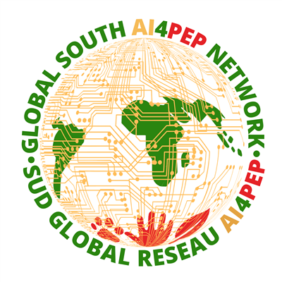

Muchas bases.
Un solo camino.
Guaraci es un orquestador de descargas: busca los datos públicos de Brasil directamente en cada fuente oficial y lo entrega todo listo para usar, con interfaz web y fidelidad al dato original. Menos tiempo buscando bases, más tiempo investigando, planificando y creando soluciones para el país.

Guaraci en poco más de un minuto
El sitio y la aplicación reales, con una recolección hecha en vivo: de la búsqueda de la base al archivo listo en su equipo. Narración en inglés.
Del dato disperso a la información útil
Los datos públicos de Brasil existen, pero están dispersos en decenas de portales, cada uno con su formato y su forma de descargar. Guaraci los busca directamente en la fuente oficial y los entrega en un solo lugar, con calidad, integridad y fidelidad al dato original.
Buscar datos da trabajo
- Cada base está en un portal distinto del gobierno.
- Formatos técnicos y difíciles de abrir (como los archivos .dbc).
- Hay que repetir la descarga estado por estado, año por año.
- Es fácil quedarse con datos desactualizados o provenientes de intermediarios.
Todo en un solo camino
- Se acabó la caza por decenas de portales distintos.
- Entregado listo para usar: CSV, Parquet o base de datos.
- Usted elige período, estado y recorte, y él descarga todo.
- Siempre de la fuente oficial, sin intermediarios.
La dimensión del proyecto
La cuenta es sencilla: 32 instituciones oficiales producen los datos, que Guaraci organiza en 30 grupos y entrega como 259 conjuntos de datos distintos, listos para descargar. El catálogo lista 271 entradas porque algunas de ellas son otro camino hacia una base ya listada.
Las 32 instituciones
- Ministerio de Salud
- IBGE
- NASA
- INPE
- INMET
- ANA
- CETESB
- ANVISA
- MMA
- IBAMA
- Tesoro Nacional
- INEP
- PRF
- INCA
- MDS
- SGB
- FUNAI
- MTE
- MDHC
- SENAPPEN
- ISP-RJ
- Detran-SP
- Transferegov
- IPEA
- CVE-SP
- CGU
- Compras.gov.br
- PNCP
- MapBiomas
- SSP-SP
- Municipio de Río de Janeiro
- gov.br
Información pública con más alcance
Guaraci organiza el acceso a los datos públicos y ayuda a personas e instituciones a encontrar información que respalda investigaciones, políticas públicas, acciones de prevención y decisiones con mayor impacto social.
Ver las basesUn retrato amplio de Brasil
Las fuentes van del nacimiento al cuidado de la salud, pasando por población y economía, clima, saneamiento y territorio.
Salud pública
Enfermedades, hospitalizaciones, defunciones, nacimientos, vacunación, vigilancia epidemiológica (dengue, chikungunya, zika, fiebre amarilla, mpox), calidad del agua y unidades del SUS.
171 entradas en el catálogoPoblación y economía
Estimaciones de población, Censo por edad y sexo y PIB de los municipios: el contexto que da sentido a los indicadores.
68 entradas en el catálogoClima y ambiente
Temperatura, lluvia, caudal de ríos, estaciones meteorológicas y focos de incendio, para relacionar las condiciones ambientales con la salud y la calidad de vida.
26 entradas en el catálogoSaneamiento
Información nacional sobre agua, alcantarillado y servicios de saneamiento, base para evaluar desigualdades y riesgos.
6 entradas en el catálogoTerritorio
Todas las áreas se cruzan por municipio, estado y región, lo que permite comparar realidades locales en todo Brasil.
Cobertura nacionalExplore los 259 conjuntos de datos
Nada de “y otros”: el catálogo completo está abajo. Busque por nombre, enfermedad o tema, filtre por área y haga clic en cualquier base para ver parámetros, campos y el comando listo. Algunos conjuntos son la misma base que otro por un camino distinto (la API del catálogo abierto junto al FTP del DATASUS o al archivo anual) y vienen marcados en la tarjeta con “otro camino hacia”. Por eso la lista tiene 271 tarjetas para 259 conjuntos de datos.
Consulte los campos: haga clic en cualquier base para ver las columnas del dato, los parámetros de recolección y el comando listo, o abra la documentación completa.
No se encontró ninguna base con ese filtro. Pruebe otro término o pida la inclusión de una base nueva.
De cero a los datos en 5 pasos
No hace falta saber programar: después de instalar, todo ocurre en una interfaz web en su navegador. La terminal solo aparece en la instalación, y le mostramos exactamente qué escribir.
Instale los dos programas necesarios
Guaraci funciona dentro de Docker (un “contenedor” que ya trae todo configurado) y se copia al equipo con Git. Ambos son gratuitos:
Copie Guaraci a su equipo
Abra la terminal (en Windows, busque PowerShell en el menú Inicio) y escriba las dos líneas siguientes, pulsando Enter después de cada una:
Antes de seguir, confirme que Docker está listo. Así, si algo se traba más adelante, ya sabrá si la causa es Docker o Guaraci:
Construya Guaraci (solo la primera vez)
Este comando prepara todo lo que Guaraci necesita dentro de Docker. Tarda unos minutos, pero solo hace falta hacerlo una vez:
Encienda Guaraci
Un único comando levanta el servidor y abre la interfaz solo en el navegador, en http://localhost:8002:
./scripts/desktop/start-guaraci.sh. Para apagarlo después: stop-guaraci.Pida sus datos desde la interfaz
En la pantalla que se abre, elija la fuente (por ejemplo, dengue), complete los filtros (años, estado, formato) y haga clic en crear la descarga. Usted sigue el progreso en vivo y, al final, los archivos quedan en la carpeta Guaraci Downloads, en su Escritorio.
✔ exportado: dengue_2023-2024_SP.csv en Guaraci Downloads
¿Quiere el mapa completo?
La documentación extensa cubre la instalación, la interfaz, la línea de comandos y cada uno de los 259 conjuntos de datos, con todos los parámetros, los valores aceptados y los campos reales de cada base.
Dónde encaja Guaraci
Guaraci nace dentro del hub AutoAI-Pandemics y abastece al data lake Sabiá: tres iniciativas conectadas, del dato en bruto a la decisión en salud pública.
AutoAI-Pandemics
Hub de IA del ICMC-USP para la preparación y respuesta a epidemias, el paraguas científico del proyecto.
ActivoGuaraci
El orquestador de descargas: busca 259 conjuntos de datos directamente en las fuentes oficiales y lo entrega todo listo para usar.
Disponible hoy · uso localSabiá Data Lake
El acervo continuo y siempre actualizado, abastecido por Guaraci, con interfaz propia de consulta.
En construcciónHecho para distintos públicos
La misma iniciativa sirve a quien investiga, enseña, gestiona servicios públicos o desarrolla soluciones.
Investigadores
Reúnen datos de varias fuentes para estudios científicos con más rapidez.
Gestión pública
Apoya políticas, prevención y decisiones con información organizada.
Docencia
Docentes y estudiantes usan datos reales en el aula y en proyectos.
Innovación
Los equipos de tecnología construyen análisis, paneles y productos de datos.
Siempre directo de quien produce el dato
Guaraci se conecta con las instituciones que originan la información, sin intermediarios que puedan retrasar o alterar los datos. Así usted recibe el dato oficial, actualizado y trazable.
Quién hace posible a Guaraci
Guaraci se desarrolla en el ecosistema AutoAI-Pandemics con el apoyo de instituciones de investigación y financiadores internacionales.
Dudas antes de empezar
.dbc, un formato comprimido antiguo que suele trabar a quien está empezando: Guaraci hace la conversión por usted.CITATION.cff en el repositorio, por si también desea citar la herramienta usada en la recolección.CITATION.cff del repositorio.Datos que iluminan decisiones
Una iniciativa abierta para ampliar el acceso a la información pública y apoyar soluciones con impacto científico, social y territorial.